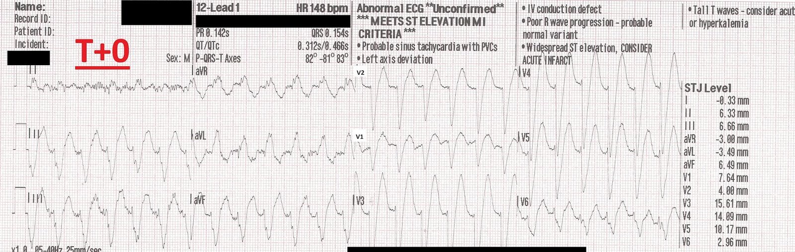
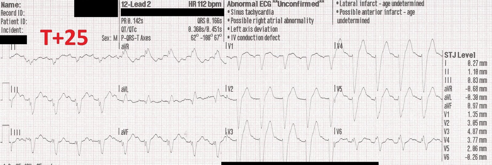
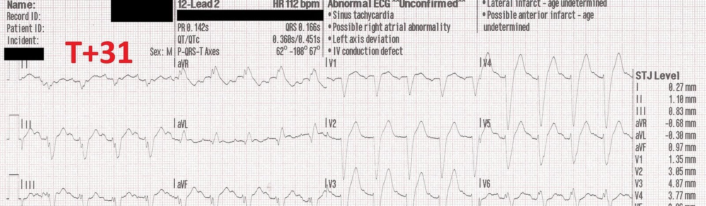
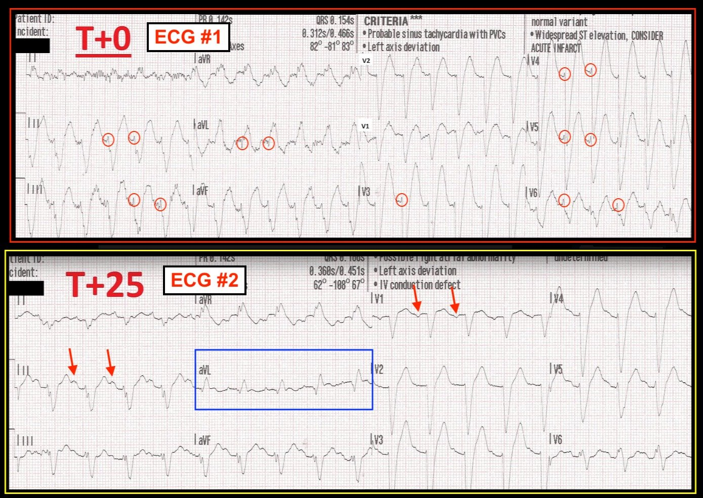

05/08/2018 — Đau ngực và khó thở đột ngột kèm nhịp nhanh QRS rộng
Bản dịch tiếng Việt của bài "Sudden Chest pain and SOB with a Wide Complex Tachycardia" – Dr. Smith’s ECG Blog. Giữ nguyên toàn bộ 6 hình ảnh của bản gốc.
Ca bệnh này do một nhân viên cấp cứu ngoài viện muốn giấu tên đóng góp (các bình luận của anh ấy được ghi bằng màu đỏ).
Đây là một bệnh nhân nam 60 mấy tuổi gọi cấp cứu vì đột ngột đau ngực dữ dội và khó thở. Không có tiền sử bệnh hay dùng thuốc gì.
Khi chúng tôi đến, bệnh nhân đang trong tình trạng nguy kịch (in extremis) với rối loạn ý thức, tím tái và vã mồ hôi. Chúng tôi không ghi được điện tâm đồ ban đầu vì bệnh nhân vã mồ hôi, nhưng máy đo độ bão hòa oxy qua mạch nảy cho thấy độ bão hòa oxy 53 và tần số 170, không bắt được mạch quay.
Điện tâm đồ ban đầu:


Đó là nhịp gì?
Diễn giải của Smith:
Nhịp nhanh và bệnh nhân đang trong tình trạng nguy kịch, vì vậy dùng điện là điều trị thích hợp. Nếu bệnh nhân chỉ ở mức bệnh vừa phải, có thể thử adenosine.
Bạn có nghĩ adenosine sẽ có hiệu quả không?
Tôi nghĩ là có. Bản ghi này có hình ảnh LBBB khá thuyết phục, với khử cực nhanh ở phần đầu QRS tại V1-V3.
Ngoài lề: Một người đã bình luận rằng có QRS đồng hướng ở các chuyển đạo trước tim (tất cả QRS cùng một hướng, không có sóng RS). Đây là một nhận xét rất hay, tuy nhiên không hoàn toàn đúng! Thực ra không có đồng hướng: có dạng rS ở các chuyển đạo trước tim phải, giống hệt như trong LBBB. Đồng hướng thực sự sẽ không có sóng r (nhỏ) đó, thấy rõ nhất ở V3.
Tuy nhiên, hình ảnh LBBB không hoàn toàn thuyết phục: hãy nhìn các chuyển đạo thành dưới, có một khía trên nhánh xuống của sóng S. Như vậy, khử cực KHÔNG nhanh như ở các chuyển đạo trước tim, và điều này khiến người ta nghĩ rằng có thể đây là VT.
Vì vậy chẩn đoán phân biệt là:
1. VT, so với
2. SVT (cuồng nhĩ, AVNRT, AVRT) kèm LBBB và “QRS phân mảnh.”
Nếu đây là LBBB với QRS phân mảnh, thì nó giống, nhưng không đồng nhất với, dấu hiệu Chapman (khía trên nhánh lên của sóng R ở I, aVL hoặc V6 trong LBBB) hoặc dấu hiệu Cabrera (khía dài hơn 50 ms trên nhánh lên của sóng S ở một trong các chuyển đạo V3-V5 trong LBBB).
Một nhịp nhanh đều xảy ra đột ngột (kịch phát) (không có sóng P) trông giống LBBB nhiều khả năng là nhịp trên thất kèm “dẫn truyền lệch hướng” (dẫn truyền “lệch hướng” ở đây là do LBBB).
Nếu vậy, nó thường sẽ đáp ứng với adenosine. Nếu không phải, adenosine vẫn an toàn khi là VT. Vì vậy nếu bệnh nhân không ở trong tình trạng nguy kịch, adenosine là một lựa chọn thay thế tốt cho điện.
QRS phân mảnh được định nghĩa là: Hình ảnh RSR′ bao gồm nhiều hình thái khác nhau của khoảng QRS (thời gian QRS dưới 120 ms), có hoặc không có sóng Q. Nó được định nghĩa bởi sự hiện diện của một sóng R phụ (R′) hoặc khía gần đáy sóng S, hoặc sự hiện diện của 2 sóng R′ trở lên (phân mảnh) ở 2 chuyển đạo liên tiếp, tương ứng với vùng cấp máu của một động mạch vành chính.
[Mithilesh K. Das, và cs. Significance of a Fragmented QRS Complex Versus a Q-wave in Patients with Coronary Artery Disease. Circulation. 2006;113:2495-2501.]
Ca bệnh tiếp diễn
Chúng tôi dán miếng dán đa năng (combi pads), máy hiển thị một nhịp QRS rộng và chúng tôi đã thử sốc đồng bộ, nhưng máy theo dõi liên tục đồng bộ vào vùng nằm giữa các phức bộ QRS (có lẽ do sóng T?). Vì vậy chúng tôi tiến hành sốc điện chuyển nhịp không đồng bộ (giống như khử rung) ở mức 100 J [nhìn lại thì lẽ ra nên dùng liều khử rung (200J)].
Bản ghi này được ghi sau sốc điện chuyển nhịp không đồng bộ:


Một lúc sau, tần số tim đang giảm dần.


Tôi làm việc ở một vùng rất hẻo lánh nên chúng tôi vận chuyển bằng đường bộ khoảng 30-40 phút để gặp phương tiện vận chuyển đường không.
Sau sốc điện chuyển nhịp, bệnh nhân cải thiện nhưng vẫn còn nhịp QRS rộng ở tần số 120-150. Chúng tôi bắt đầu cho aspirin, amiodarone và oxy dòng cao. Bệnh nhân được thở CPAP và được ghi các điện tâm đồ 12 chuyển đạo liên tiếp; xét nghiệm sinh hóa tại chỗ (POC chem 3) cho thấy K, Na và hemoglobin bình thường.
Bệnh nhân cải thiện và được chuyển bằng đường không đến bệnh viện dưới dạng báo động STEMI. Cuối cùng bệnh nhân không được thông tim, nằm vài ngày ở đơn vị hồi sức tích cực (ICU) và được xuất viện với chẩn đoán suy tim sung huyết (CHF) mới khởi phát và tăng huyết áp. Sau ca này, chúng tôi khá chắc chắn rằng nhịp ban đầu là nhịp nhanh thất (VT), nhưng chúng tôi, cũng như bác sĩ điều phối y tế (medical control), không chắc nhịp tiếp diễn sau đó là gì.
Chúng tôi cũng không chắc về việc máy theo dõi không đồng bộ được và liệu sốc điện không đồng bộ có phải là hành động tốt nhất hay không (dù tôi không chắc chúng tôi có thể làm gì khác khi không thể đổi chuyển đạo)?
Bình luận:
Xử trí rất tốt. Việc các nhân viên cấp cứu ngoài viện nghĩ đó là VT không quan trọng. Dùng điện có hiệu quả tốt, và khi bệnh nhân đang trong tình trạng nguy kịch, họ thậm chí không nhớ cú sốc.
Còn về việc dùng chế độ đồng bộ tự động, đôi khi nó nguy hiểm vì máy không tìm được điểm thích hợp để đồng bộ, như trong ca này. Vì vậy, chuyển sang khử rung trong ca này là phù hợp.
Hãy cảnh giác với chế độ đồng bộ tự động khi sốc điện chuyển nhịp!

———————————————————–
Bình luận của KEN GRAUER, MD (5/8/2018):
———————————————————–
Dr. Smith đã bàn luận rất hay về ca minh họa này liên quan đến một nhịp WCT đều (= nhịp nhanh QRS rộng – Wide-Complex Tachycardia). Quá trình suy nghĩ của tôi về cơ bản trùng khớp với Dr. Smith — tôi xin bổ sung thêm các điểm sau. Để tiện bàn luận — tôi đã đặt 2 điện tâm đồ đầu tiên trong 3 điện tâm đồ của ca này cạnh nhau ở Hình 1.


Điện tâm đồ #1 (@T=0, bản ghi PHÍA TRÊN trong Hình 1) — Tôi luôn muốn bắt đầu đánh giá bằng cách mô tả những gì ta thấy trong bối cảnh tình huống lâm sàng. Ở điện tâm đồ #1 — có một nhịp nhanh QRS rộng đều (WCT) @ ~150/phút không có dấu hiệu rõ ràng của sóng P xoang ở một bệnh nhân không ổn định về huyết động. Như Dr. Smith đã nêu, vì bệnh nhân này không ổn định — nhịp nhanh đó là nhịp gì không quan trọng, vì dù thế nào thì cũng có chỉ định “dùng điện” ngay lập tức. Nếu không thể “đồng bộ” — sốc điện không đồng bộ là can thiệp được lựa chọn.
- Mặc dù có chỉ định dùng điện ngay lập tức — vẫn đáng để cân nhắc Chẩn đoán Phân biệt của một WCT đều không có dấu hiệu rõ ràng của sóng P xoang: i) Luôn nghĩ đến VT cho đến khi chứng minh được điều ngược lại (vì các nghiên cứu cho thấy >80% tất cả các WCT đều không có dấu hiệu rõ ràng của sóng P xoang hóa ra là VT — và, VT là khả năng “tệ nhất” trong số này); ii) SVT kèm BBB có sẵn từ trước (blốc nhánh hoặc IVCD); iii) SVT kèm dẫn truyền lệch hướng; hoặc, iv) Một SVT “liên quan đến WPW”.
- Vì >80% các WCT không có sóng P xoang hóa ra là VT — cách nghĩ của chúng ta phải là cần chứng minh nhịp này không phải VT, chứ không phải ngược lại. Dù vậy, nếu bệnh nhân của bạn ổn định — thì ngay cả khi bạn tin nhịp đó là VT, điều này không có nghĩa là bạn cần sốc điện chuyển nhịp ngay. Đôi khi có thể thử dùng thuốc trước. Ca này không phải như vậy — vì bệnh nhân này không ổn định và cần dùng điện ngay lập tức!
- Dù vậy, như Dr. Smith đã nêu — điện tâm đồ #1 trông như có thể là nhịp trên thất! Đó là vì hình thái QRS thực sự giống hình thái LBBB — và, vì vectơ khử cực ban đầu ở nhiều chuyển đạo là nhanh (sóng lệch ban đầu thẳng trong các hình bầu dục MÀU ĐỎ ở Hình 1). Khi nhịp là VT, với xung động xuất phát từ tâm thất và xa hệ thống dẫn truyền — vectơ khử cực ban đầu có xu hướng chậm hơn nhiều! LƯU Ý: Có nhiều nhiễu trên điện tâm đồ #1. Với tình trạng lâm sàng mong manh của bệnh nhân không ổn định này, điều đó hoàn toàn dễ hiểu! Nhưng quan trọng là cần nhận ra rằng do nhiễu này, việc đánh giá điện tâm đồ khó khăn hơn nhiều.
- Vượt ra ngoài phần cốt lõi: Mặc dù hình thái QRS ở điện tâm đồ #1 giống hình ảnh LBBB — nó không hoàn toàn điển hình cho LBBB vì: i) Không có phức bộ QRS một pha (tức là dương hoàn toàn) ở các chuyển đạo bên I và V6; ii) Có vẻ có sóng Q ban đầu ở chuyển đạo bên aVL; và, iii) Có phân mảnh rõ rệt của phức bộ QRS ở nhiều chuyển đạo. Do phì đại thất trái (LVH) rõ rệt rất thường gặp ở bệnh nhân LBBB — nhiều bản ghi có LBBB không cho thấy sóng R dương hoàn toàn cho đến chuyển đạo ngực bên V7 hoặc V8. Ngoài ra, một số bệnh nhân LBBB có thể từng lúc xuất hiện trục lệch phải trên mặt phẳng trán, được cho là do mức độ “blốc tương đối” ở phân nhánh sau lớn hơn so với phân nhánh trước. Dù vậy, các sóng khử cực ban đầu rất hẹp ở rất nhiều chuyển đạo trên điện tâm đồ #1 (trong các hình bầu dục MÀU ĐỎ) — cộng với nhánh xuống của sóng S rất dốc (thẳng) ở các chuyển đạo ngực phía trước, cả hai đều ủng hộ mạnh khả năng nguyên nhân trên thất. LƯU Ý: Như Dr. Smith đã nêu, KHÔNG có hình ảnh âm toàn bộ (global negativity) của QRS ở tất cả các chuyển đạo ngực trên điện tâm đồ #1 — vì QRS không âm hoàn toàn ở cả 6 chuyển đạo! (thay vào đó, dường như có một sóng r ban đầu nhỏ và hẹp ở hầu như mỗi chuyển đạo trong 6 chuyển đạo này!).
- Như Dr. Smith đã nêu — Adenosine lẽ ra sẽ là một thuốc ban đầu rất tốt để thử NẾU bệnh nhân này ổn định về huyết động vào thời điểm ghi điện tâm đồ #1. Tôi không muốn dùng adenosine khi tôi gần như chắc chắn nhịp là VT (dù tác dụng có hại thường sẽ không xảy ra, ngay cả khi nhịp là VT) — nhưng xét các đặc điểm hình thái nêu trên, tôi khá yên tâm ở mức ~90% rằng nhịp WCT ở điện tâm đồ #1 là nhịp trên thất. LƯU Ý: Điều này có nghĩa là chúng ta không thể chắc chắn 100% rằng nhịp ở điện tâm đồ #1 là nhịp trên thất chỉ dựa vào một bản ghi ban đầu duy nhất này! Quan trọng là cần nhận ra rằng chúng ta thường phải bắt đầu điều trị dựa trên “phỏng đoán có cơ sở tốt nhất” của mình trước khi biết chắc một nhịp cụ thể là gì.
- Như Dr. Smith đã nêu — điện tâm đồ #2 chứng minh nghi ngờ của chúng ta về nhịp trên thất ở điện tâm đồ #1 là đúng — vì phần lớn hình thái QRS sau khi chuyển về nhịp xoang giống như trong lúc WCT (ngoại lệ duy nhất là phức bộ QRS giờ đây rõ ràng chủ yếu âm trên bản ghi sau chuyển nhịp).
- ĐIỂM VỀ NGỮ NGHĨA: Tôi sẽ không gọi nguyên nhân QRS rộng ở điện tâm đồ #1 là “dẫn truyền lệch hướng”. Đó là vì điện tâm đồ #2 cho thấy đã có BBB có sẵn từ trước! Tôi muốn dành thuật ngữ “dẫn truyền lệch hướng” cho những trường hợp QRS rộng ra trong lúc nhịp nhanh vì tần số tim nhanh hơn làm giảm thời gian hồi phục ở một hoặc nhiều phân nhánh dẫn truyền, và do đó gây QRS rộng trong lúc (nhưng không phải sau) nhịp nhanh.
- Nhịp xoang đã được tái lập ở điện tâm đồ #2 (các mũi tên ĐỎ). Lưu ý rằng ít nhất ở một số phức bộ QRS tại chuyển đạo aVL (trong hình chữ nhật MÀU XANH) — có đoạn ST dạng vòm (coving) kèm chênh lên nhẹ. Vì vậy — tôi sẽ lo ngại về khả năng OMI cấp hoặc mới xảy ra là nguyên nhân gây nhịp nhanh. Tôi xin nhấn mạnh rằng ngoài đoạn ST dẹt thẳng dạng “bậc thềm” ở chuyển đạo V6 — chúng ta thực sự không thấy dấu hiệu nào khác của OMI mới xảy ra trên điện tâm đồ #2 ở bản ghi sau chuyển nhịp — nên những gì ta thấy ở aVL rất có thể hóa ra không có gì. Nhưng điểm cần nói là bằng cách luôn duy trì mức độ nghi ngờ cao (cho đến khi chứng minh được điều ngược lại) — bạn sẽ ít có khả năng bỏ sót các chẩn đoán tinh tế nhưng quan trọng hơn nhiều.